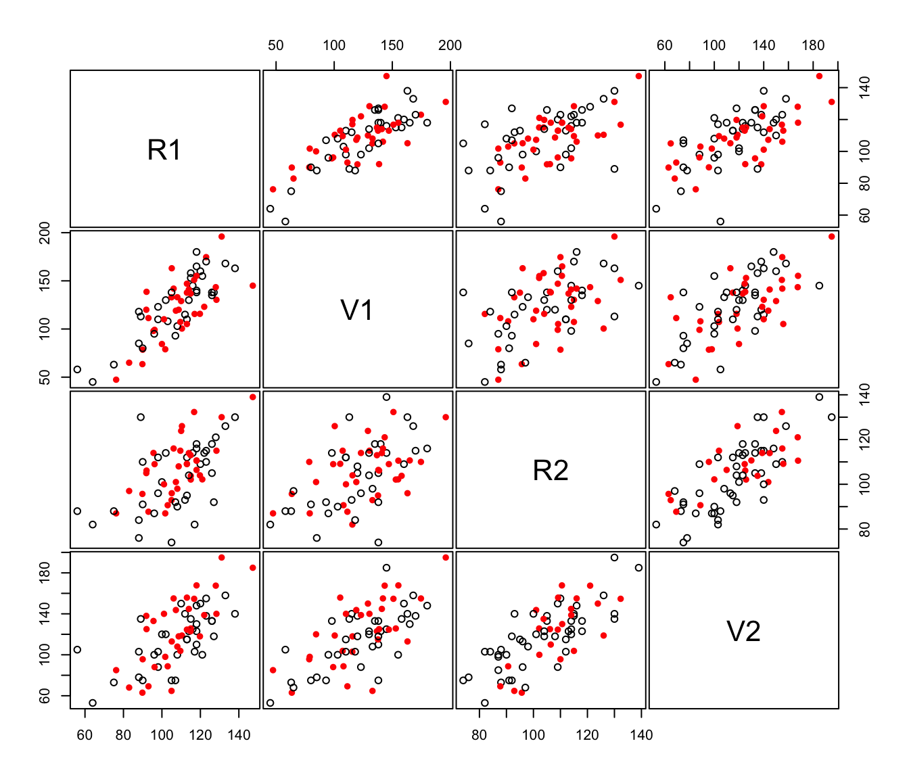

imputePairs.RdCreates a scatter plot for each pair of variables in given data, allowing display of imputations for missing values in different colors and symbols than non missing values.
A numeric vector, matrix, or data frame of observations containing missing values. Categorical variables are not allowed. If a matrix or data frame, rows correspond to observations and columns correspond to variables.
The dataset data with missing values imputed.
Either an integer or character vector assigning plotting symbols to the nonmissing data and impued values, respectively. The default is a closed circle for the nonmissing data and an open circle for the imputed values.
Either an integer or character vector assigning colors to the nonmissing data and impued values, respectively. The default is black for the nonmissing data and red for the imputed values.
As in function pairs.
As in function pairs.
As in function pairs.
As in function pairs.
As in function pairs.
As in function pairs.
As in function pairs.
As in function pairs.
As in function pairs.
As in function pairs.
As in function pairs.
As in function pairs.
A pairs plot displaying the location of missing and nonmissing values.
Schafer J. L. (1997). Analysis of Imcomplete Multivariate Data, Chapman and Hall.
# \donttest{
# Note that package 'mix' must be installed
data(stlouis, package = "mix")
# impute the continuos variables in the stlouis data
stlimp <- imputeData(stlouis[,-(1:3)])
# plot imputed values
imputePairs(stlouis[,-(1:3)], stlimp)

# }